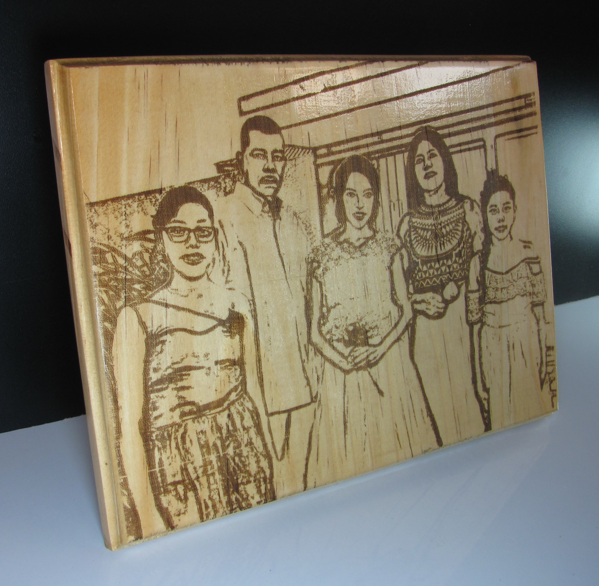

Catálogo
| Productos | Descripción | Precios | muestra |
|---|---|---|---|
| Cuadro madera de triplex 9mm | Cuadro de madera grabado en una cara, medida escogida por el cliente. Proceso de cortado, lijado, inmunizado, sellado, grabado y barnizado. Para colgar en pared lleva una platina dentada o para dejar en superficie lleva un soporte de varilla de aluminio. | $5.000-$90.000 |  |
| Cuadro madera de pino 18mm | Cuadro de madera grabado en una cara y rebordeado, Una dimensión solo podrá tener una de las siguientes dos medidas: 30 cm o 15 cm, la otra dimensión lo determinara la imagen a grabar. Proceso de cortado, lijado, ruteado, inmunizado, sellado, grabado y barnizado. para colgar en la pared lleva una platina dentada o para dejar en superficie lleva un soporte de varilla de aluminio. | $15.000-$85.000 |  |
| Cuadro madera de estibas | Cuadro de madera grabado en una cara, medida escogida por el cliente. Proceso de lijado, cortado, inmunizado, armado, sellado, grabado y barnizado. Para colgar en pared lleva 2 cáncamos y una cuerda. | $5.000-$120.000 | |
| Vinilo decorativo | Vinilo decorativo cortado con laser, medida y color escogido por el cliente. Proceso de medición, cortado, grabado y retirado de excesos. | $3.000-$96.000 |  |
| Cuadro rodaja de tronco | Rodaja de tronco grabado en una cara, tamaño variable según existencias . Proceso de rebanado, lijado, inmunizado, sellado, grabado y barnizado. Para colgar en la pared lleva platina dentada. | $10.000-$60.000 |  |
| Caja MDF de 3mm | Caja de MDF grabada en la tapa, medida escogida por el cliente. Proceso de cortado, pegado, lijado y grabado. | $7.000-$45.000 |  |
| Caja madera de triplex 9mm | Caja de tríplex grabado en la tapa y pirograbado en los bordes, medida escogida por el cliente. Proceso de cortado, lijado, inmunizado, armado, sellado, grabado y barnizado. | $20.000-$70.000 |  |
| Cojín terciopelo | Cojín de terciopelo grabado en una cara, tamaño estándar (380mmx340mm), se utiliza relleno siliconado en su interior. Proceso de cortado, costura, grabado, rellenado y cerrado. | $30.000 | |
| Llavero madera/textil | Llaveros grabados en ambas caras, de tamaño estándar (40mmx40mm), en textil o madera (cuadrada o redonda) . Proceso de cortado, lijado, sellado grabado y barnizado. | $2.500 |  |
| Jardinera cubo de madera | Jardinera hecha con un cubo de madera maciza, grabado en una cara, lleva un cactus o suculenta plantada en un orificio de 60mm de diámetro y 60mm de profundidad. Proceso de perforado, lijado, inmunizado, sellado, grabado, barnizado y plantado. | $15.000 |  |
| Reloj rodaja de tronco | Reloj de rodaja de tronco grabado en una cara, tamaño variable según existencias, mecanismo incrustado en un orificio de 60mmx60mm. Proceso de rebanado, perforado, lijado, inmunizado, sellado, grabado barnizado y armado. Para colgar en la pared lleva platina dentada. | $20.000-$90.000 | |
| Libreta madera de triplex 3mm | Libreta con cubierta de madera tríplex 3mm, grabado en la portada, tamaño estándar (220mmx140mm), 50 hojas lisas, Costura copta. Proceso de cortado, perforado, lijado, inmunizado, sellado, grabado, barnizado y armado. | $25.000 |  |
| Soporte celular | Soporte para celular en MDF 3mm y formica grabado en una cara, tamaño estándar (90mmx200mm). Proceso de pegado, cortado, lijado y grabado. Es para dejar sobre una superficie y ademas lleva una abertura para cargar el celular. | $13.000 |  |
| Cliente aporta material | Si el cliente aporta el material se cobrara simplemente el valor del grabado mas los costos de preparación del material (lijado, barnizado, etc.) | 1.000 | |
| Grabado adicional | Para grabados en las superficies adicionales de los productos ofrecidos, se adicionara el valor del grabado simplemente. | 1.000 |